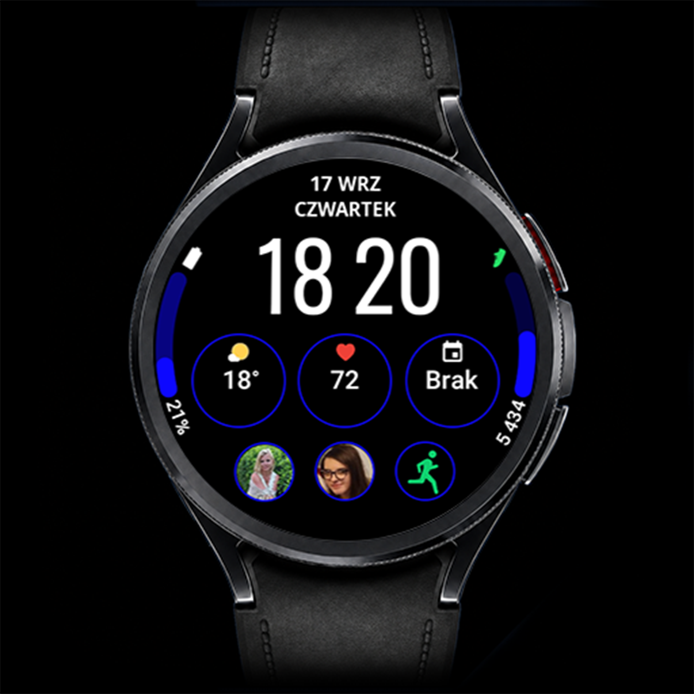

Clear Vision · Wear OS
CV06 Side
Rozbudowana personalizacja. Czytelny układ.
CV06 Side łączy dużą cyfrową godzinę z bocznymi paskami postępu i zestawem edytowalnych komplikacji. Możesz dopasować zarówno wyświetlane dane, jak i oprawę graficzną, zachowując wyraźny podział informacji.

Najważniejsze funkcje
- 6 edytowalnych komplikacji + 2 edytowalne paski postępu
- 2 style czcionki godziny: cienki i gruby
- Zmiana kolorów pasków postępu
- Zmiana kolorów okręgów wokół komplikacji
- Możliwość całkowitego wyłączenia okręgów
- Duża cyfrowa godzina i osobny AOD
Galeria
Galeria — 8 zdjęć
Dotknij zdjęcia, aby je powiększyć.
Dane i skróty po Twojemu
Edytowalne komplikacje pozwalają dobrać informacje do własnych potrzeb. Zależnie od zegarka, Wear OS i dostępnych aplikacji możesz wybierać m.in. baterię, kroki, kalendarz, pogodę, aktywność, tętno czy alarmy. Każde pole obsługuje określone typy danych.
Dwa edytowalne paski postępu
Paski prezentują zgodne dane w formie graficznej. Możesz zmieniać ich kolor, dopasowując go do reszty tarczy. Dobór danych zależy od źródeł obsługujących typ komplikacji używany przez dany pasek.
Okręgi i dwa style godziny
Zmieniaj kolory okręgów wokół komplikacji lub całkowicie je wyłącz, aby uprościć wygląd. Dla dużej cyfrowej godziny wybierz cieńszą albo grubszą czcionkę. Dzięki temu możesz zmienić charakter tarczy bez rezygnacji z jej układu.
Always-On Display
Po przejściu zegarka w tryb Always-On Display tarcza pokazuje uproszczony widok z czytelną godziną. AOD musi być włączony w ustawieniach zegarka; jego dostępność i zachowanie zależą także od urządzenia i ustawień systemowych.
Jak dostosować tarczę
- Ustaw CV06 Side jako aktywną tarczę zegarka.
- Przytrzymaj tarczę i wybierz Dostosuj / Customize.
- Wybierz komplikacje i dane dla pasków postępu. Dopasuj kolory pasków i okręgów, ewentualnie wyłącz okręgi, a następnie wybierz cienką lub grubą czcionkę godziny.
- Zatwierdź wybór, wróć do tarczy i sprawdź wyświetlane dane.
Nazwy opcji mogą różnić się zależnie od zegarka i wersji Wear OS.
Instalacja i konfiguracja →Dodatkowe dane: Phone Battery Complication
Sama tarcza działa bez Phone Battery Complication. Ta zewnętrzna aplikacja od amoledwatchfaces jest niezbędna do wybranych dodatkowych źródeł danych, np. baterii telefonu. Zainstaluj i skonfiguruj ją na telefonie z Androidem oraz zegarku Wear OS. Dostępne pozycje zależą od zgodności źródła danych z wybranym polem.
Zgodność i działanie komplikacji
Tarcza jest przeznaczona dla zgodnych zegarków Wear OS. Przed instalacją sprawdź zgodność swojego urządzenia w Google Play. Dostępność, wygląd, długość tekstu i odświeżanie komplikacji zależą od zegarka, wersji Wear OS i dostawcy danych. Nie każda komplikacja działa w każdym polu. Jeśli pole pozostaje puste, sprawdź uprawnienia wybranej aplikacji lub wybierz inne zgodne źródło.
Pytania o CV06 Side
Ile komplikacji mogę zmienić?
CV06 Side ma 6 edytowalnych komplikacji + 2 edytowalne paski postępu.
Czy mogę wyłączyć okręgi?
Tak. Okręgi wokół komplikacji można całkowicie wyłączyć w personalizacji.
Czy mogę zmienić kolor pasków i styl cyfr?
Tak. Dostępna jest zmiana kolorów pasków oraz dwa style czcionki godziny: cienki i gruby.
Czy CV06 ma AOD?
Tak. Tarcza ma osobny tryb Always-On Display.